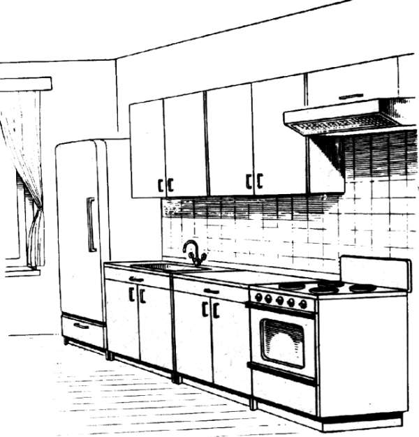
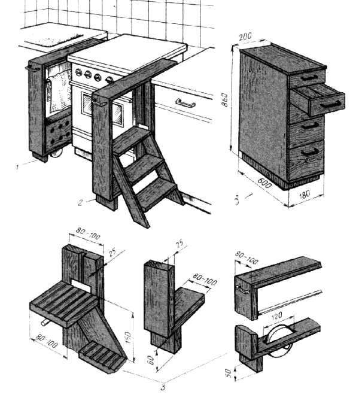
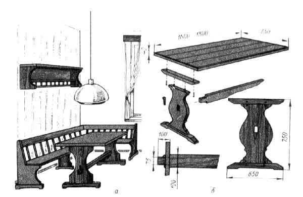
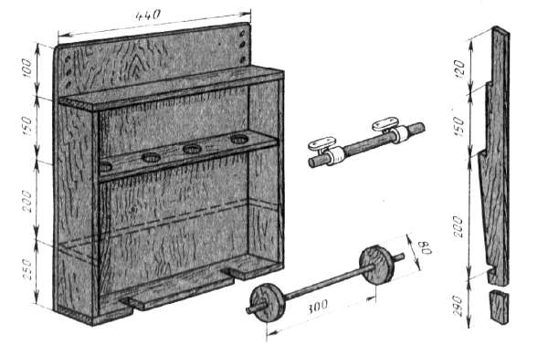

Оборудование кухни.

Как и прихожие, кухни в большинстве наших домов предельно скромные. Только в последние годы они стали более или менее удовлетворять потребностям не слишком разбалованной семьи.
В кухне не только готовят пищу, ее используют и как столовую. Это двойное использование кухни и должно быть воплощено в ее обустройстве.
В зависимости от площади и пропорций кухни расстановка мебели может быть различной: в один ряд, два ряда, в виде буквы «Г», буквы «П». В любом случае расстановка мебели будет зависеть, прежде всего, от того, как установлены в ней плита и мойка. Обычно их устанавливают вдоль одной стены, так что удобнее всего между ними поставить рабочий шкаф – стол, а если позволяет место, то и холодильник. Обычно над мойкой и столом укрепляют навесные шкафы для хранения посуды, коробок с приправами и т. д.
Противоположная сторона кухни остается свободной, там можно поставить обеденный стол и стулья (табуреты). В свободном углу напротив холодильника может быть установлен буфет или высокий напольный шкаф. На свободной стене можно повесить декоративные украшения.
Если подходит стандартная мебель, проблем по оборудованию кухни будет немного. А если площадь недостаточна, придется продумать, как высвободить побольше места для домашней хозяйки и семьи, когда все соберутся поужинать. Возможно, придется отказаться от чего-то в стандартном наборе мебели, либо вообще все изготовить самому в соответствии с площадью и запросами.
Если придется делать самому, надо сразу же учесть, что кухонную мебель изготовляют из материалов, устойчивых к влаге, нагреванию, хорошо противостоящих ударам. Кроме того, материал кухонной мебели должен облегчить выполнение требований гигиены и санитарии. Естественно, в ход пойдут пластики, они практичны и гигиеничны: легко моются, чистятся, вытираются. Они красивы – имитируют ценные породы дерева или светлые однотонные.
Пол в кухне должен быть покрыт линолеумом, так как его легче поддерживать в чистоте. Линолеум не пропускает влагу, скрадывает шум шагов, достаточно теплый.
Стены над мойкой, плитой, рабочим столом до навесных шкафов должны быть облицованы. Материал можно взять любой: керамическую плитку, декоративную синтетическую пленку или пластик. Если облицовывается часть стен, то остальное пространство можно окрасить в светлые тона, оклеить моющимися обоями, обить деревянными либо синтетическими рейками, панелями и т.п.
Сразу же надо продумать освещение, во всяком случае учесть, что, кроме общего, желательно иметь местное освещение над рабочим столом хозяйки.
Теперь рассмотрим примеры оборудования кухонь столярными изделиями по индивидуальным проектам.

Рис. 91. Оборудование кухни
На стандартной кухне стандартные изделия: напольный шкаф, холодильник, плита, мойка. Все предметы расположены впритык, разрывов между ними почти нет.
Что еще можно сделать? В стандартный шкаф под мойку можно вмонтировать дополнительную полку для размещения самых разных предметов – средства для мытья раковины, щетки, бруска для заточки ножей и др. Под полкой может быть установлено ведро для мусора.
Для изготовления полки можно использовать любой щитовой материал толщиной 10-20 мм, покрытый пластиком. Полка должна легко сниматься и устанавливаться, для чего в ее середине со стороны стены выпиливают глубокий вырез для прохода канализационной трубы от раковины. На переднюю кромку полки прибивают раскладку шириной 25-30 мм, которая образует бортик против соскальзывания предметов. Полка опирается на бруски небольшого сечения, закрепленные шурупами к стенкам шкафа.
На дверке шкафа с внутренней стороны некоторые закрепляют карман для мочалки.
Если холодильник небольшой, под него можно сделать шкафчик. Материалы – столярная, древесностружечная плита или щиты устаревшей мебели. Размеры (длина и ширина) шкафа определяет площадь основания холодильника, а высоту шкафа выбирают во всех случаях индивидуально. Важно помнить о соседних предметах и не нарушать ансамбль.
Конструкция шкафа должна быть прочной, чтобы холодильник стоял надежно. Шкаф состоит из основания, двух боковых стенок, заднего полика, крышки и откидной дверки. Соединение боковых стенок с поликом, основанием и крышкой производят на вставных шипах (шкантах) с помощью клея. Задний полик вставляют между боковыми стенками, что придает конструкции дополнительную прочность.
После сборки шкафа на основание крепят гвоздями треугольные косынки из фанеры (мини-ножки), откидную дверку навешивают на рояльную петлю. В верхней части дверки с внутренней стороны надо закрепить защелку для ее фиксации, а снаружи – ручку. Лицевая сторона дверки должна быть облицована пластиком или синтетической декоративной пленкой под цвет другой кухонной мебели. Боковые стенки, внутренние плоскости ящика красят эмалью.
Рассмотрим проект напольного шкафа. Его размеры определяются местом установки и другими предметами кухонной мебели, – шкаф должен вписываться в обстановку. В общем, для шкафа достаточно свободного «пятачка» размером 500 ? 500 мм. В магазине такой не купишь, остается заказать шкаф в какой-нибудь фирме или смастерить самому.
Сделать небольшой шкаф для кухни так же просто, как и шкафчик под холодильник. Материал тот же – древесностружечные плиты, столярная плита, щиты от разборной мебели, а также пластик для наружной отделки или синтетическая пленка.
При разработке конструкции усложнять простые формы не следует, шкаф должен иметь приемлемые пропорции и вписаться в интерьер кухни так, чтобы не возникало даже мысли, что его здесь когда-то не было.
Шкаф состоит из коробки, на которую при помощи вставных шипов крепят боковые стенки. Задний полик крепят шурупами в четверти на кромках боковых стенок, крышка крепится на вставных шипах. На внутренние боковые стенки шкафа устанавливают опорные планки, на которые будут уложены полки. Количество полок определяет высота шкафа, а также хозяйка, которая лучше знает необходимую высоту полок. Планки крепят на клею с шурупами.
Дверка шкафа устанавливается на рояльной петле, для фиксации монтируют магнитную защелку. Основу (коробку) облицовывают пластиком или пленкой с трех сторон. Дверку и крышку облицовывают пластиком или пленкой под цвет остальной мебели в кухне.
Если шкаф покрывают эмалью, сначала наружные и внутренние плоскости шкафа и полки шлифуют, шпаклюют и после этого красят. Когда краска высохнет, на полки желательно положить листы какого-нибудь искусственного материала для упрощения гигиенических процедур, предохранения поверхности от царапин.
В некоторых случаях в кухне между стандартными напольными шкафами, плитой или мойкой получаются разрывы, в которые стандартную мебель не поставишь, а место пустует или используется неэффективно. Эти ниши можно использовать, устроив узкие выдвижные шкафы, столик-лестницу для упрощения пользования подвесными шкафами, полотенцесушитель и т.п.
Чтобы изготовить перечисленные изделия, потребуются следующие материалы: столярная или древесностружечная плита, пиломатериалы хвойных пород, 5-миллиметровая фанера или древесноволокнистая плита, декоративный бумажно-слоистый пластик или синтетическая пленка и фурнитура.
Как всегда, работа начинается с разработки чертежей. Почти всегда при изготовлении шкафчик возможны варианты. Например, с одной дверкой, за которой располагаются полочки, или с выдвижными ящиками; обычная конструкция или с колесиками для облегчения выдвижения загруженных ящиков.

Рис. 92. Выдвижные конструкции и шкаф: 1 – выдвижная сушилка; 2 – выдвижная лесенка; 3 – шкаф с выдвижными ящиками
Шкаф состоит из коробки, на которую крепят корпус с выдвижными ящиками. Крышка, передние стенки ящиков и лицевые кромки стенок облицованы пластиком. Если ящик будет стоять рядом с плитой, на боковые кромки крышки крепят алюминиевые уголки с прокладками из листового асбеста. Это обеспечит сохранность кромок от высокой температуры при использовании плиты. Аналогичные противопожарные требования предъявляются и к остальным предметам, если предполагается их соседство с плитой.
Для плинтусной коробки нарезают заготовки из плиты или пиломатериала толщиной 20 мм. После их обработки коробку собирают на вставных шипах с клеем. Переднюю часть облицовывают пластиком.
На коробку с помощью шипов крепят боковые стенки, на стенки заранее приклеивают направляющие планки и усиливают крепление шурупами. По ним будут перемещаться ящики. Передние кромки шкафа желательно облицевать пластиком или пленкой (можно окрасить эмалью под цвет остальной мебели).
Крышку шкафа и переднюю ее кромку облицовывают пластиком. Ширина крышки должна быть на 30 мм шире шкафа. Крепят крышку к боковым стенкам на вставных шипах. Задний полик крепят шурупами (можно гвоздями). Внутренние плоскости ящиков шкафа покрывают эмалью.
Далее приступают к изготовлению выдвижных ящиков. Их делают из дощечек толщиной 12 мм. Стенки ящика собирают на прямых открытых щипах. В нижней части стенок на расстоянии 5 мм выбирают пазы под 5-миллиметровую фанеру для дна ящика, на лицевых сторонах пазы шириной 10 мм под направляющие планки. Собирают ящик на клею. После сборки передней и задней стенок с боковой в пазы вставляют дно ящика, затем – вторую боковую стенку. Таким образом дно оказывается зажатым боковыми стенками ящика. На переднюю стенку ящика наклеивают пластик. После склеивания и обработки ящика шкуркой устанавливают ручку.
Конструктивно прост и выдвижной полотенцесушитель. Его основание представляет собой тележку на двух колесиках с опорными боковыми ножками короче выпуска колес на 3-5 мм. На основание устанавливают вертикальные доски-стенки из хвойных пород толщиной 25 мм, сверху на них устанавливают крышку. Закрепляют элементы между собой с помощью шипов. Под крышкой на расстоянии 80-100 мм устанавливают штангу из древесины (металлическую трубку) для сушки полотенца.
В нижней части крепят доску, на которую можно поставить ящик с отверстиями для сушки, например, лука и др. Крышку и переднюю стенку облицовывают пластиком, спереди (на боковой стенке) крепят ручку для выдвижения полотенцесушителя.
Другое также узкое приспособление для кухни – лесенка. Немало проблем испытывает хозяйка небольшого роста, если нужно достать или что-то положить на верхнюю полку подвесного шкафа или на шкаф. Помощником ей может стать как раз вот такая складная лесенка, закрывающая к тому же непривлекательную нишу между плитой, например, и шкафом.
Для изготовления лесенки потребуется древесина хвойных пород толщиной 25 мм, пластик, металлический стержень (трубка), две скобы и крючок-фиксатор. Спецификация, как видно, не слишком обширная. Лесенка состоит из основания на трех плоских ножках, трех вертикальных досок-стоек и крышки. Передняя и средняя стойки имеют продольные пазы, по которым вертикально перемещается металлический стержень или полдюймовая трубка. К трубке с помощью скоб из листовой стали крепят верхнюю ступеньку лесенки. При выдвижении лесенки трубка, скользя по пазам, на определенном расстоянии упирается в дно пазов, и ступеньки принимают горизонтальное положение. При подъеме вверх лесенка убирается в проем, ступеньки меняют угол наклона. Чтобы избежать случайного передвижения лесенки в неподходящий для этого момент, ее можно зафиксировать специальным крючком.
Лесенка состоит из трех ступенек, изготовленных из досок толщиной 25 мм. Две ступеньки соединяются с боковыми опорами на сквозные шипы с помощью клея. Верхнюю ступеньку крепят на торцах опор гвоздями. Боковую (переднюю по отношению к кухне) стенку и крышку облицовывают пластиком. Для выдвижения лесенки на боковой стенке устанавливают ручку.
Стол и скамейки. До сих пор речь шла об обустройстве, так сказать, хозяйственной части кухни. Но в ней есть еще и обеденная часть. Для небольшой кухни можно изготовить по своему проекту стол, скамейки, полки и многое другое. Эти предметы могут быть простыми и красивыми. Для отделки можно применить искусственные материалы, а можно сделать эти предметы из дерева, украсив их резьбой, точеными деталями и т. п.

Рис. 93. Обеденный стол и скамейки
В комплект могут входить стол, скамейка или табуреты, полка с предметами кухонного обихода и декоративными украшениями в виде ваз, блюд и др. предметов из керамики или дерева.
Размеры стола и скамейки зависят от имеющейся площади и состава семьи. И еще одно предварительное замечание: мы определили этот комплект мебели как обеденный кухонный, но его можно сконструировать и в расчете на установку в другом помещении.
Для изготовления стола, скамейки или углового дивана, полки потребуются сухие пиломатериалы – доски и бруски толщиной от 25 до 50 мм. Крышка стола делают из досок, соединяя их между собой по любому – в паз и гребень, на вставные шипы, на шпонках или на гладкую фугу с помощью клея.
Опорой стола служат фигурно вырезанные ножки-стойки, вставленные снизу и сверху на царги. Верхний кронштейн крепят к крышке на вставных круглых шипах с усилением шурупами. Стойки соединяют между собой проножкой и затягивают клиньями. Если древесина высокого качества, готовый стол можно отделать лаком с сохранением текстуры.
Скамейка или диван состоит из трех фигурных ножек – стоек с проножкой, сиденья, подлокотников и спинки. Сидение крепят следующим образом. На концах доски выбирают сквозные гнезда, в которые запрессовывают две крайние ножки-стойки с подготовленными прямыми шипами. Для средней ножки в доске выбирают несквозные гнезда, ее закрепляют на глухих шипах.
В нижней части ножки выбирают сквозные гнезда для проножки. В средней ножке гнездо делают по сечению проножки. В крайних стойках гнезда имеют размеры уступов на концах проножки для крепления клиньями. Сначала устанавливают проножку, затем на шипы садят сидение.
Спинку изготовляют из щита из той же древесины, кромки можно закрыть красивой профильной раскладкой. Спинку крепят к задней кромке сидения и торцам подлокотников шурупами. Все сборочные работы производят на клею.
Скамейку отделывают прозрачным лаком. На сидение можно сделать стеганую ватную или поролоновую подстилку. На спинку скамейки можно закрепить аналогично изготовленные плоские квадратные подушки или одну общую длинную.
Подвесная полка должна стать гармоничным дополнением к столовому гарнитуру. Очевидно, для этого она должна быть изготовлена в том же стиле и из тех же материалов. Описывать конструкцию полки вряд ли имеет смысл: каждый отчетливо представляет себе полку, а размеры ее зависят от наличия свободного места, назначения и т.п.
Возможно, читателя заинтересует проект сервировочного столика. Случается, что он очень даже нужен. Например, у вас большая семья или приглашены гости. Хозяйке и ее помощникам трудно сервировать праздничный стол и его обслуживать. Вот тут-то сервировочный столик и будет хорошим помощником.
Столик можно сделать с одной, двумя или тремя полочками, они могут быть съемными и несъемными. Столик может перемещаться на двух или четырех колесиках, иметь бар и холодильник или не иметь их.
Исходные материалы – древесина, желательно ценных пород, плита и фанера, облицованные шпоном, пластиком или пленкой, металлическая или пластмассовая емкость для льда, петли, колесики, ручки, шурупы, гвозди. Набор материалов может быть и другим, если, предположим, появится фантазия выполнить его из металла в сочетании с деревом (каркас из трубок, а полки деревянные).
Столик состоит из четырех точеных ножек, соединенных сверху и посередине фальцованными обвязками с бортиками, в которые вкладываются полочки. Обвязки крепят с ножками на глухих шипах с клеем. Размеры ножек: длина 700 ? 40 ? 40 мм. Продольные обвязки равны 700 ? 40 ? 20, поперечные 400 ? 40 ? 20 мм. Полочки из фанеры имеют размеры 650 ? 350 ? 10 мм.
К ножкам снизу крепят колесики с шарнирами. К верхней обвязке на двух кронштейнах крепят точеную ручку. Деревянные детали отделывают лаком.
Можно сделать сервировочный столик и с тремя полками. Его конструкция принципиально другая. Столик состоит из коробки на двух колесиках, двух ножек и трех полок, соединенных между собой.

Рис. 94. Сервировочный столик с тремя полками
Коробку изготовляют из облицованной шпоном, пластиком или пленкой плиты. Она состоит из двух вертикальных стенок, двух горизонтальных полочек, среднего полика, соединенных на вставных шипах с клеем. Нижняя полочка имеет прорези для прохода колесиков, укрепленных снизу. Средняя полочка сделана с четырьмя круглыми отверстиями под бутылки для предохранения от опрокидывания.
Все полочки делают из 10-миллиметровой фанеры с раскладкой сечением 20 ? 20 мм для образования бортиков. Раскладки крепят на клею, дополнительно можно закрепить мелкими гвоздями без головок и зашлифовать.
В обработанных и размеченных по чертежу стенках коробки высверливают отверстия, вставляют на клею круглые шипы и собирают коробку. Между боковыми стенками (также на шипах) зажимают две полки. Третью полку крепят сверху на уступы коробки. Затем с передней стороны к трем кромкам полок крепят с ножки. Через бортик заднего полика и ножки в три ряда пропускают нержавеющую проволоку или прочный пластмассовый стержень, которые с одной стороны надежно защищают предметы от падения, с другой – упрочняют конструкцию. На верхнюю полку снизу на двух кронштейнах крепят ручку для перемещения столика. Отделывают столик лаком.